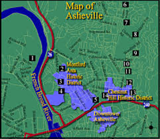
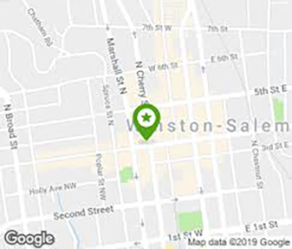
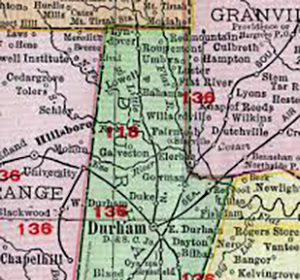

Asheville
Many of North Carolina's most popular craft beers hail from the Mountain city of Asheville. The area is also home to many great breweries giving tourists and visitors great dining experiences. Among these are the Sierra Nevada Tap Room and the Hi-Wire Brewing Company.
While Winston Salem is most know as the origin of Krispy Kreme Doughnuts, it's also been put on the map for its highly regarded Foothills Brewing Company. They've brewed popular beers such as Hoppyum IPA and Foothills Pumpkin Spice.
Winston-Salem
Durham
Durham is home to the Durham Bulls, Duke University and most importantly, Bull City Burger and Brewery. This restaurant and bar provides a great environment to eat delicious food, as well as try many local craft beers and ciders.